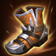
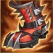

起手裝備
 長劍
長劍開局直接提高 1 技與 3 技的物理傷害，讓第一輪抓人更有壓力。

Pyke · 鉤人開戰／連續斬殺型刺客輔助
派克的核心不是第一秒就衝進去，而是先在側邊找 1 技鉤人。敵人被壓到斬殺線後再利用 2、3 技進場接大絕，成功一次就能快速滾出連續處決。 7.2e：價格 3000→2900；近戰護盾 140 +35%額外物攻→150 +40%額外物攻，遠程不套用此增強。
本站當時評級理由：派克在 ARAM 的鉤子與暈眩很容易在單線製造人數差，大絕也能把反覆被消耗到斬殺線的敵人連續收掉；但自身非常脆，對完整前排與密集保排陣容時容錯明顯下降。
標準 ARAM 先以通用基準呈現；派克的模式價值主要來自抓人與處決機制。
開局直接提高 1 技與 3 技的物理傷害，讓第一輪抓人更有壓力。

穿甲與跑速都很適合派克游移找角度，第一件就能明顯提高抓人爆發。

ARAM 常見大量護盾，能讓大絕斬殺線更不容易被臨時護盾抬走。
法術護盾讓派克更敢往前找鉤子與 3 技進場角度。

補百分比穿甲並提供緩速，讓中後期仍能對高護甲目標造成威脅。

後期需要冒險進場收割，復活能提高連續處決容錯。

前期穿甲最符合派克抓到人就打一套的節奏。

升級三級鞋後進一步強化穿甲與斬殺威脅。

鉤子或暈眩命中後限制敵方走位，讓隊友更容易接上集火。
進場承受第一輪傷害時提高生存，避免還沒到斬殺階段就先倒下。

對線式拉扯中能讓派克更容易把灰色生命回起來。

被控制時提供額外韌性與容錯，對需要進場的派克很重要。
鉤子、隱形與暈眩越快回轉，就越容易反覆找機會。

保留最可靠的進退與關鍵技能銜接；雪球戰車進場後仍可用閃現修正位置。

雪球命中後可等待隊友跟上再進場，讓近戰英雄在單線拉扯中擁有穩定的接戰與追擊角度。
1 技 > 3 技 > 2 技
ARAM 開局三個基礎技能各點 1 級，之後主升 1 技、次升 3 技；大絕能點就點。
先藏在兵線邊緣找 1 技角度，不要長時間站在正中央吃滿消耗。鉤到前排也可以，重點是先逼出對方保命技能。
兩件穿甲裝後開始有明顯斬殺壓力。2 技用來換側邊位置，3 技不要只拿來進場，也可以反向撤退順便暈追你的人。
後期最忌諱先手硬衝五人。等敵方被隊友壓到低血後再進場，以大絕重置為核心，能處決就連跳，不能處決就立即拉開。
需要魔抗保命時可替換席利妲咒怨。
很難秒人時改走更耐久的穿甲與持續換血路線。
巨蛇鋒牙可提早到第一或第二件，優先壓制護盾。
獨立歷史資料：7.2b 分類評級。7.3a 僅有部分增幅公告欄位校正，英雄分類適配與出裝未因此全面重評；不套用到標準 ARAM。
看遊戲卡片下方分類 → 點相同分類 → 看左側 S+／S／A。
三技能本身就是位移兼暈眩，能穩定觸發位移型增幅。
衝刺與潛行都是派克的日常操作，這系列多數卡能直接反覆啟動。
鉤子、三技能與大絕都是主要作用來源，技能循環越快越容易再次找機會。
一技能拉回與三技能暈眩都能觸發控制增幅，提升抓單成功率。
大絕雙放、施放大絕無敵與處決相關單卡都非常符合派克。
跑速能幫助隱形繞側與處決後快速脫離戰場。
7.2b ARAM S 第四批：派克依 7.2b 現行穿甲核心、抓人與處決機制整理；ARAM 不使用召喚峽谷輔助任務裝作為預設核心。｜v93 7.2d 標準 ARAM 全量校正：已複核 Tier、標準 ARAM 模式修正、7.2c／7.2d 英雄與道具、現行符文名稱及雪球戰車；無額外異動者沿用已驗證配置。｜v94 7.2e：7.2e：價格 3000→2900；近戰護盾 140 +35%額外物攻→150 +40%額外物攻，遠程不套用此增強。